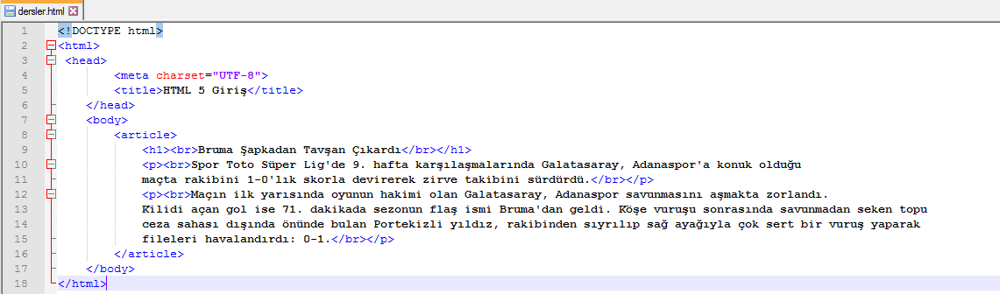
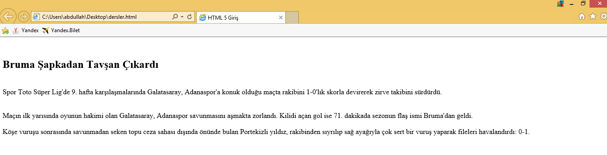
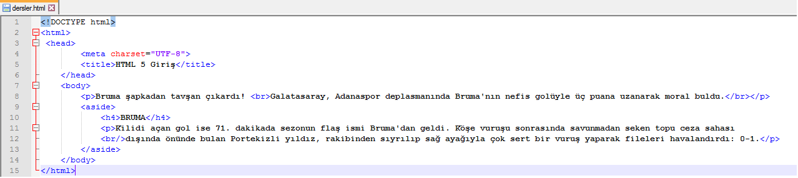
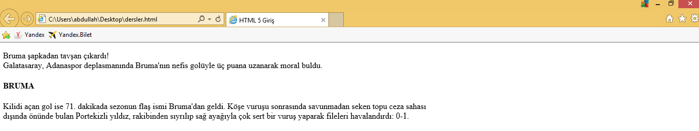
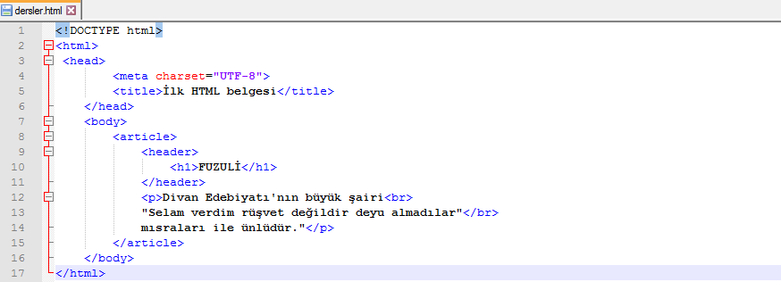
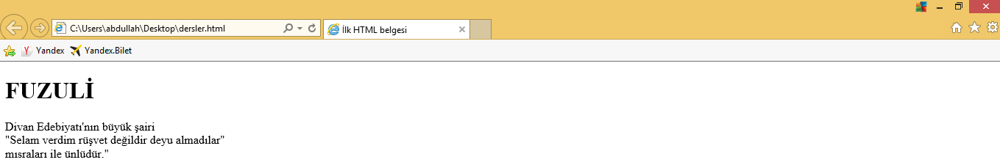
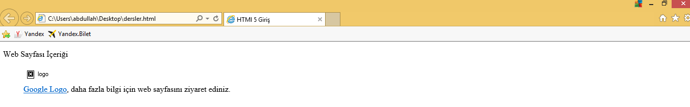
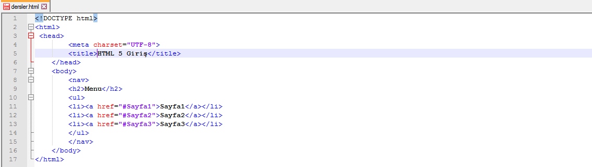
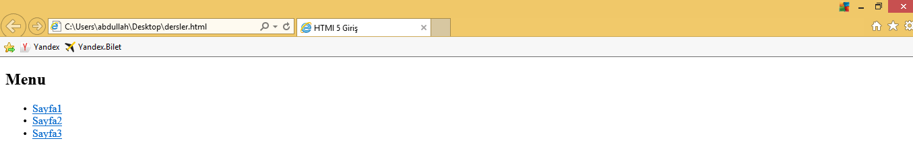
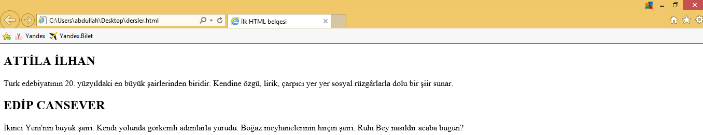

HTML 5 Temel Yapı Elemanları
HTML5 ile beraber yeni pek çok etiket geldi. Bu etiketlere kısaca göz atalım:
<article> etiketi
<article> etiketi, web sayfası üzerine yerleştirilecek haber, makale vb. metinleri tanımlamak ve yerleştirmek için kullanılır.
Kullanım için örnek bir html sayfası:
Örneğimizin çıktısı:
<aside> etiketi
<aside> etiketi, esas içerikten ayrı olarak yer almasını istediğiniz içeriği yerleştirecek alanı tanımlamak için kullanılır. Sayfa içinde genellikle bu kısım sidebar olarak da isimlendirilir.
Kullanım için örnek bir html sayfası:
Örneğimizin çıktısı:
<header> etiketi
<header> etiketi, sayfanın başlığını temsil eder. Genellikle bu eleman sayfanın en üstünde yer alır; genellikle bir logo ya da benzer bir işaret içerebilir.
Kullanım için örnek bir html sayfası:
Örneğimizin çıktısı:
<hgroup> etiketi
<hgroup> etiketi, belgenin yapısı gereği birden çok başlığı bir başlık gibi değerlendirmek için gruplama yaparken kullanılır.
<figure> etiketi
<figure> etiketi, illüstrasyonlar, diyagramlar, fotoğraflar, kod listeleri gibi kendi içeriğini anlatan bir yapı oluşturur. <figure> elemanı web sayfasının ana akışı içinde tanımlanmasına rağmen pozisyonu ana akıştan bağımsızdır yani bir şekilde uzaklaştırılırsa sayfanın ana akışı etkilenmez.
<figcaption> etiketi
<figcaption> etiketi <figure> etiketi içinde yer alarak, görsel hakkında ilave bilgiler vermek için kullanılır.
Kullanım için örnek bir html sayfası:

Örneğimizin çıktısı:
<footer> etiketi
<footer> etiketi sayfanın footer (dipnot) kısmının tanımlanması için kullanılır. Sayfanın en alttaki alandır. Bazı önemli bilgiler, yasal hatırlatmalar buraya yerleştirilir. <header> gibi kullanımı zorunludur.
<nav> etiketi
<nav> etiketi, sayfa üzerinde dolaşma (navigation) menüsünün tanımı için kullanılır..
Kullanım için örnek bir html sayfası:
Örneğimizin çıktısı:
<section> etiketi
<section> etiketi, sayfa üzerinde dolaşma (navigation) menüsünün tanımı için kullanılır..
Kullanım için örnek bir html sayfası:

Örneğimizin çıktısı:
Evet arkadaşlar HTML 5 sayfamız için istediği temel yapı elemanları bunlardı umarım faydalı olmuştur.
@2016 Contact abdullahcelik6@gmail.com